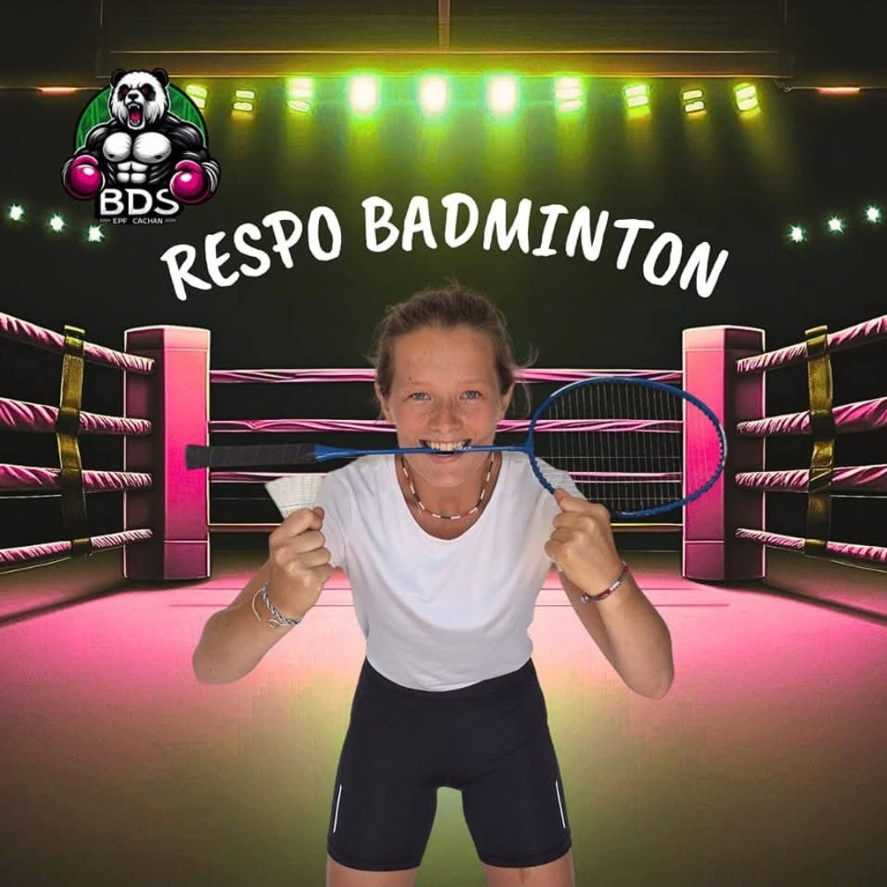
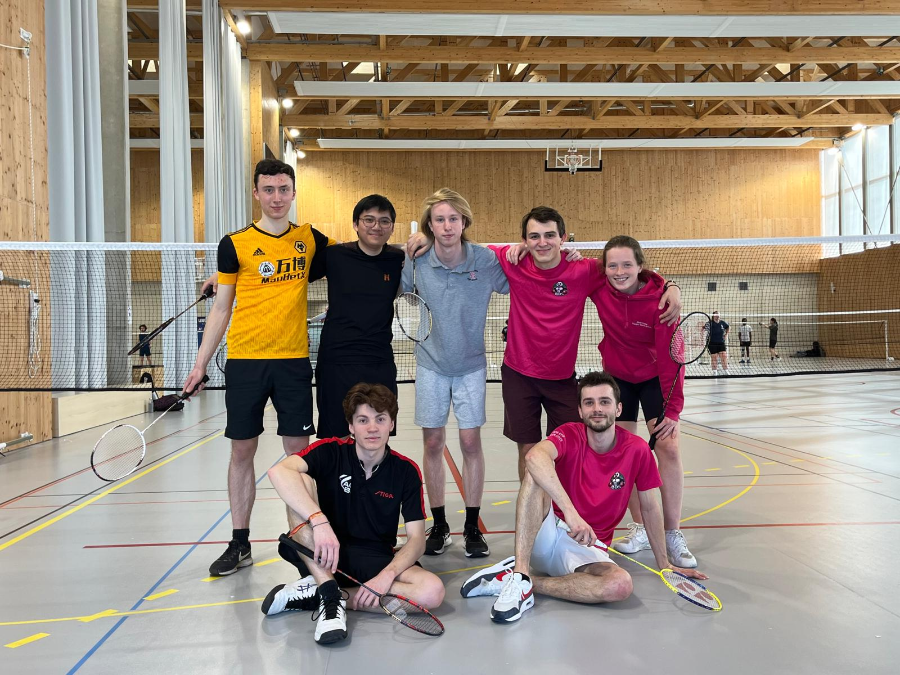
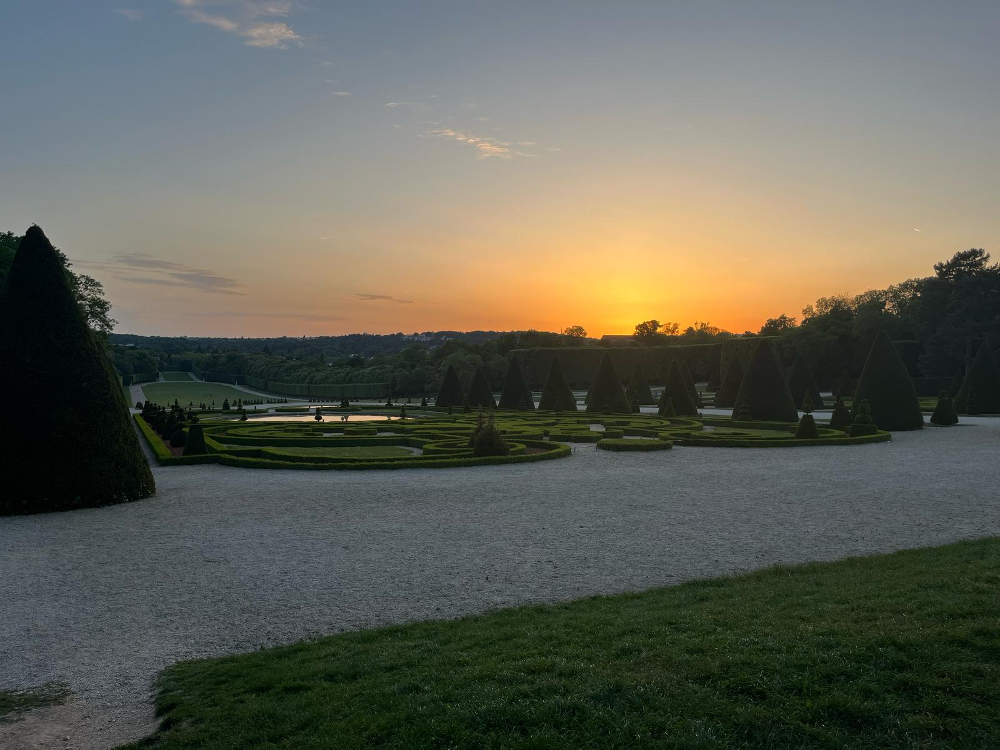

Les vacances sont finies, l'école reprend. Nous sommes déjà en 2ème année. Une année qui demandera de la patience, du courage et de la persévérance pour en venir à bout. Elle ne pouvait pas mieux commencer ! Eh oui, on a été nommés respo BADMINTON !!😱 😱 Trop la claaaasse😎😎😎


On avait d'ailleurs pu participer à une compète de bad à CentralSupélec avec JM et d'autres gens de l'école. Enora et Sophie nous avait rejoint par la suite mais elles étaient un peu mortes à cause de leur soirée de la veille avec l'EPF.

La 2ème année c'était aussi des sorties au parc de Sceaux. Je crois que sur la photo on est en train de jouer au kems et qu'on était en train de vous piler encore une fois... sans rancune ? En guise de bonus, j'ai rajouté des photos du coucher de soleil au parc parce que je les trouvais trop belles.



La 2ème année a été intense en travail mais nous en sommes arrivés à bout (en même temps c'était un peu trop facile nan ?).
Fini les maths abstra, la CDS, la techno méca, l'électronique, la programmation. Quand on regarde tout ce qu'on a étudié c'est quand même pas rien !
Après l'effort le réconfort pas vrai ?? Alors on va bien profiter de nos vacances, je peux te le dire !
→ Direction la Bretaaaagne chez Enora 🔥🔥🔥
Nous voilà arrivés en Bretagne, nous sommes restés 4 jours mais on a eu le temps de faire plein de choses et de bien s'amuser ensemble.
Au programme : balades sur la plage, baignade pour les plus courageux, randos et excursion en bateau😍😍. Un séjour qui aussi court qu'intense.


On a fait de très belles randonnées avec des vues exceptionnelles. Les paysages font rêver, la mer est d'un bleu magnifique qui me rappelle tes yeux. On comprend mieux pourquoi la France est l'un des plus beaux pays du monde... Quand je regarde à nouveau les photos je me dis qu'on dirait des photos de cartes postales. Enfin surtout celles à gauche et à droite...


Il ne faut pas croire que l'on a passé notre journée à admirer les paysages, on a fait également plein de choses productives :
des chateaux de sables (big up à Loïs), des autoroutes, des molkys dont je n'ai toujours pas digéré la défaite et on t'a aussi enterré vivante
tu pouvais plus te barrer ça c'était peut-être le plus drôle😁.


Notre séjour était déjà génial et est devenu encore plus exceptionnel lorsqu'on a appris qu'on allait avoir le droit de faire un petit tour en bateau avec les parents d'Enora. Une excursion près des côtes bretonnes. Je m'en rapplerai toujours, nous sommes montés dans le bateau tout excités à l'idée de découvrir la beauté des côtes depuis la mer. Le vent soufflait, et le bateau avançait à tout allure. Nous étions installés à l'avant du bateau mais nous n'avions pas froid même avec les bourasques de vent car nous avions mis un kway. Nous nous sommes même baignés ensemble et avions nagé jusqu'à une petite plage sur laquelle nous avons eu le temps de faire bronzette l'espace d'un instant. Tout le monde était très heureux de faire cette virée sur la mer, même si Enora avait un peu vomi à cause du mal de mer. Pour une fois que ce n'est pas à cause de l'alcool... On ne peut rien lui repprocher cette fois !


N'oublions quand même pas le meilleur moment de la journée : MANGERRRR🤤🤤🤤
On avait commandé des pizzas et on s'était assis sur le bord de la digue.
On était tellement beau qu'un photographe est passé et nous avait demandé la permission pour nous prendre en photo.
De vrais manequins !


De retour à la maison, il faut bien se reposer un peu ! On en a profité pour lire au soleil allongé sur un transat😎. Que demande le peuple... Le 1er août, nous avons fêté l'anniversaire d'Enora pour ses 20 ans ! Quelle chance pour elle de nous avoir à ses côtés 😊.


Pour clôturer cette album sur la 2ème année, je voulais qu'on se remémore des bons souvenirs et revoir ensemble les plus belles photos de nous et des paysages. Je ne m'en lasserai jamais. Ils sont tellement beaux qu'on croirait une invention, une image générée par IA, mais non. Nous y sommes bien allés et nous avons ces paysages de nos propres yeux !


.jpg)

.jpg)

Cet album touche à sa fin, j'espère qu'il t'aura plus. Je n'avais pas beaucoup de photos de nous pendant l'année. Il faut dire qu'on était trop occupés à travailler. Pendant cette année, le sport ne se limitait pas seulement au badminton. Nous avons aussi joué au tennis à côté de chez toi et quelques fois au squash. c'était peut-être même les premières fois que tu y jouais de ta vie. Quel honneur pour moi !